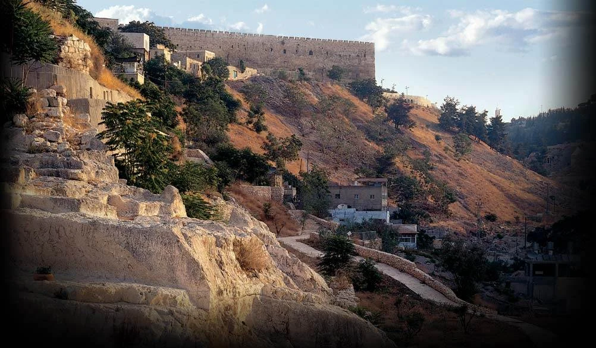

האתר ההיסטורי · שנת 2009
עיר דוד — ירושלים הקדומה
מרכז מבקרים בלב ירושלים המזמין אתכם לסיור מרגש בעיר דוד היא ירושלים הקדומה.
בעיר דוד מופעלים סיורים מודרכים, מיצג תלת־מימד ומצפה פנורמי של עיר דוד.
על השחזור: התיאור העברי והקישורים המקוריים נשמרו בארכיון, אך מלוא עמודי התוכן בעברית לא נכללו בקבצים. הפרקים ההיסטוריים ששוחזרו במלואם זמינים באנגלית.